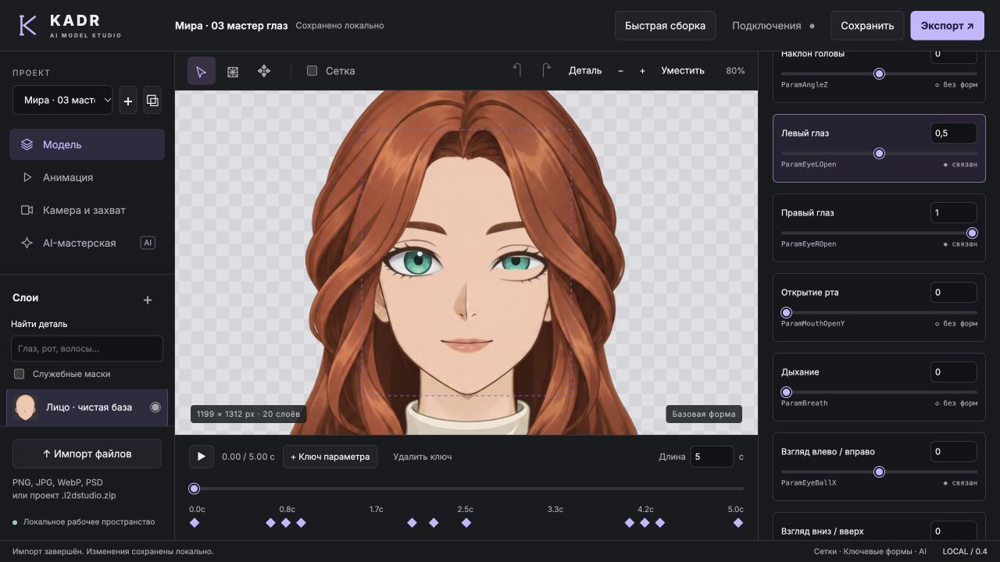
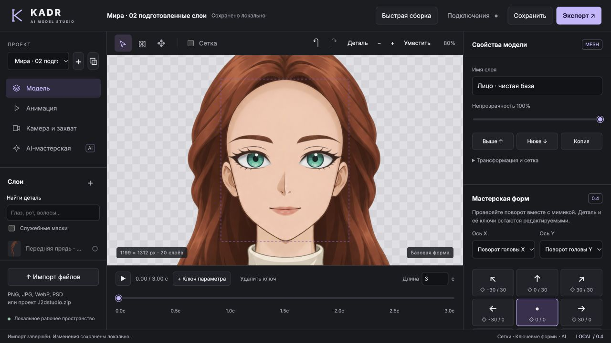
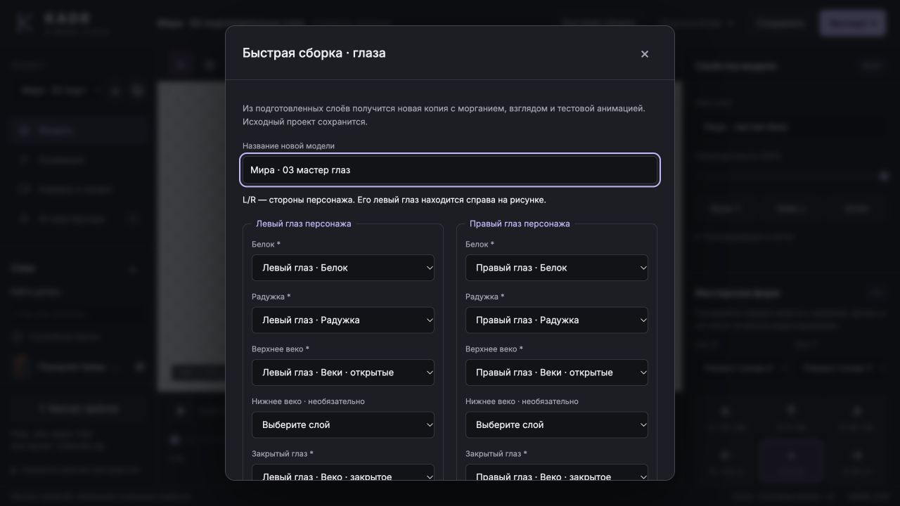
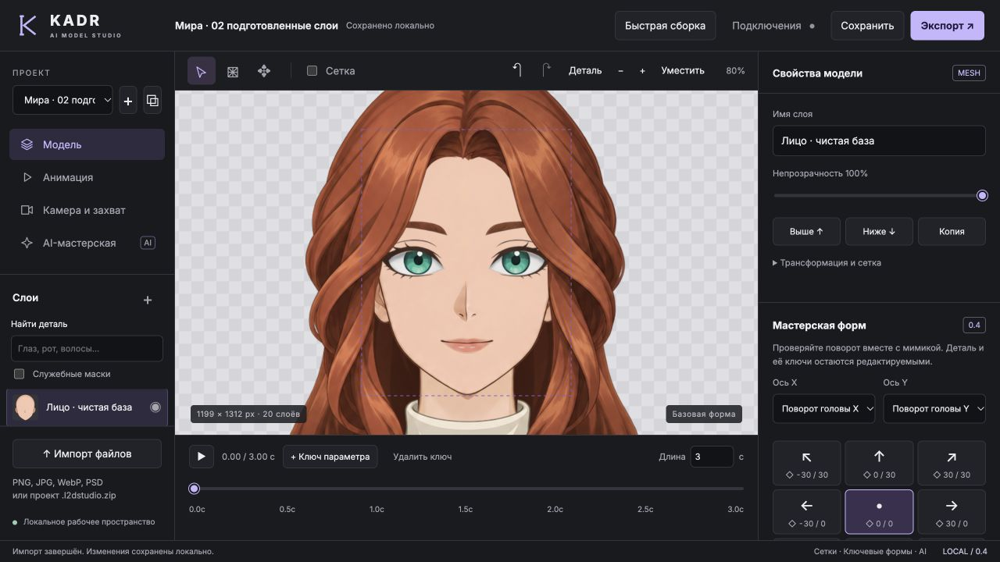

Черновик для авторского ревью · Лицедей 0.4 · 9 ноября 2026
Лицедей: от первого движения к своему персонажу
Начнём с уже собранной Миры. Посмотрим, как меняются рот, глаза и наклон головы, затем настроим темп и выражение. После этого будет проще собрать собственного персонажа: мы уже знаем, какие детали и формы нужны для результата.
Лицедей 0.4 является рабочим прототипом. Он редактирует слои, сетки, параметры и анимацию, а также содержит локальный предпросмотр лицевого захвата. Самый быстрый путь к первому движению проходит через готовый проект. Своя модель из цельной картинки потребует отдельной подготовки.
1. Запустить редактор
Для запуска нужна папка исходников Лицедей 0.4 и Python 3.9–3.12. На macOS откройте терминал в этой папке и выполните:
python3 -m venv .venv
.venv/bin/python -m pip install -r requirements.txt
.venv/bin/python server.py
Затем откройте http://127.0.0.1:18321/ в современном настольном браузере. Пока редактор нужен, оставьте терминал открытым. Для остановки сервера нажмите Ctrl+C. Node.js для обычного запуска не требуется.
После установки зависимостей на macOS можно использовать Start.command. Локальный Лицедей.app использует папку проекта и подготовленное окружение; это ещё не самостоятельный установщик. Полной проверки Windows и Linux пока нет. Если порт 18321 занят, запустите server.py с аргументом --port 18322 и откройте соответствующий адрес.
В новом рабочем пространстве появляется «Бот · первые движения». Нажмите ▶ под холстом. Бот показывает принцип работы ещё до импорта собственного рисунка.
2. Открыть готовую Миру
Скачайте один из проектов и выберите его через «Импорт файлов». ZIP распаковывать не нужно: редактор создаст отдельный проект с рисунками, сетками, формами и дорожками.
 Повторное открытие проекта Миры в редакторе
Повторное открытие проекта Миры в редакторе
Нажмите ▶, затем остановите воспроизведение и перейдите во вкладку «Модель». Сделайте копию проекта кнопкой рядом с выбором проекта, если хотите сохранить исходный пример для сравнения.
В списке параметров найдите «Открытие рта», «Мягкий наклон головы» и «Поднять брови». Меняйте числовое значение или ползунок. Для проверки можно отключить режим «Редактировать ключевую форму»: простое движение ползунка не должно случайно превратиться в правку геометрии.
В каждом видео ниже используются существующие формы Миры. Кадры рассчитаны ядром Лицедей, подписи добавлены отдельно. Ролики не являются записью интерфейса или камеры; встроенного экспорта видео в версии 0.4 нет.
3. Настроить открытие рта
У Миры два рисунка рта: закрытый и открытый. Параметр «Открытие рта» меняет их видимость и геометрию открытой формы.
Посмотреть открытие рта · MP4
Проверьте три значения: 0, 0,5 и 1. На нуле рот закрыт, на единице открыт полностью. Промежуточное значение показывает качество перехода. Если на нём появляется двойной контур, нужно поправить совмещение рисунков или ключи видимости, а не добавлять новые движения поверх ошибки.
Чтобы изменить ритм примера, откройте «Анимация» и выберите дорожку «Открытие рта». У ключей доступны время, значение и переход после ключа: «Линейно», «Плавно» или «Ступень». Уменьшите значения пиков, если персонаж открывает рот слишком широко. Раздвиньте ключи для более медленного движения или добавьте участок с нулём для паузы.
Для своего короткого цикла установите длительность 2 секунды и запишите значения рта: 0 в начале, 0,7 на 0,5 секунды, 0 на 1 секунде, 0,4 на 1,5 секунды и снова 0 на 2 секунде. В каждом положении нажмите «+ Ключ параметра». Для мягкого движения выберите «Плавно» и включите «Повторять анимацию».
Ключевая форма определяет, как выглядит рот при конкретном значении. Ключ на шкале времени определяет, когда это значение появится. Сначала настройте форму, потом её ритм.
В ролике после медленного открытия идёт условный ритм реплики. Звука и разбора фонем здесь нет. В Лицедей отсутствует микрофонное управление ртом; доступный лицевой захват получает открытие челюсти с камеры.
4. Собрать выражение лица
Выражение получается из сочетания нескольких движений. В Мире уже можно менять высоту бровей, открытие рта и оба века. Это ограниченный набор форм; он не заменяет отдельные рисунки улыбки, злости или других выражений.
Посмотреть смену мимики · MP4
Повторите три состояния через параметры:
- Нейтральное: брови 0, рот 0, оба глаза 1.
- Приподнятые брови и открытый рот: брови 0,8, рот 0,6, оба глаза 1.
- Более прикрытые веки: брови −0,25, рот 0, оба глаза 0,65.
Названия эмоций зависят от рисунка. Сначала посмотрите, какое впечатление даёт сочетание именно у вашего персонажа. Если нужна широкая улыбка с другой линией губ, подготовьте для неё рисунок или новые формы: увеличение открытия рта само по себе улыбку не создаёт.
Для последовательности на шкале времени удобно нажать «Записать все параметры» в каждой опорной позе. Это запишет и остальные значения модели, поэтому перед записью верните ненужные движения в нейтраль. Чтобы сохранить только выбранную дорожку, используйте «+ Ключ параметра».
5. Настроить наклоны головы в стороны
Голову лучше наклонять как группу. Тогда глаза, брови, рот и волосы сохраняют взаимное положение. В Мире они связаны с вращательным деформером «Голова · наклон ±5°».
Посмотреть наклоны головы · MP4
Поставьте «Мягкий наклон головы» в −0,8, затем в 0 и 0,8. Эти значения соответствуют приблизительно четырём градусам наклона в каждую сторону. Это движение в плоскости рисунка. Параметр с числом 0,8 не означает угол 0,8 градуса: диапазон данного примера нормализован от −1 до 1.
Во вкладке «Анимация» уменьшите крайние значения, чтобы сделать наклон спокойнее. В новом ролике взгляд немного опережает голову; если нужен только наклон, оставьте дорожку взгляда на нуле. Для отдельного движения уже есть ролик с одним параметром.
 Сетка основы лица и общий деформер
Сетка основы лица и общий деформер
На своей модели создайте вращательный деформер через «+» в разделе «Деформеры», выберите детали головы с общим родителем и разместите центр около шеи. Свяжите движение рычага с параметром наклона через «Редактировать ключевую форму». Проверьте промежуточные положения, а не только крайние: рот и глаза должны следовать за головой, шея не должна оставлять щель.
6. Добавить моргание, взгляд и дыхание
Независимое моргание · MP4
Открытие каждого глаза меняется отдельно: 1 означает открытый глаз, 0 закрытый. Стороны считаются от персонажа. Его левый глаз находится справа для зрителя. Проверьте один закрытый глаз, другой открытый, затем оба глаза на значении 0,5.

Проверка половины закрытия глаза
Движение взгляда · MP4
Радужка смещается по горизонтали и вертикали и обрезается маской глаза. Проверьте взгляд при открытом и прикрытом веке. Радужка не должна выходить за край видимой области.
Дыхание · MP4
В этой модели дыхание немного двигает одежду. Для спокойной петли параметр проходит от 0,12 до 0,85 за две секунды и возвращается ещё за две. После отдельных проверок соедините движения. Если что-то ломается только в сочетании, исправляйте конкретную комбинацию, а не всю модель сразу.
7. Собрать собственного персонажа быстрее
Начать с готового примера
Это самый короткий путь к пониманию редактора. Импортируйте ZIP, измените силу движений и ключи времени. Такой старт позволяет сразу увидеть связь параметров и рисунка. Подстановка другого портрета не переносит на него риг автоматически: новые детали нужно совместить и настроить.
Импортировать подготовленные слои
Для своего рисунка подготовьте PNG на прозрачном фоне или RGB PSD с обычными растровыми слоями, 8 бит на канал. Разделите то, что будет двигаться независимо: голову, одежду, передние пряди, глаза, брови и рот. Для начала достаточно фронтального ракурса.
 Исходник после импорта как одного слоя
Исходник после импорта как одного слоя
Цельная картинка удобна как исходник. Для независимого глаза или рта нужны отдельные детали. Под волосами должна существовать кожа, а под подвижной прядью должны быть дорисованы скрытые участки: иначе движение откроет пустоту.

Проверка кожи под временно скрытыми прядями
PSD ускоряет импорт нескольких деталей вместе. Сложные эффекты и маски лучше подготовить заранее; группы при импорте уплощаются. Сначала проверьте порядок слоёв и совмещение, затем начинайте риг.
Использовать мастер глаз
«Быстрая сборка» в версии 0.4 работает с глазами. Для каждого глаза назначьте белок, радужку, открытое веко и закрытую форму. Нижнее веко можно назначить дополнительно. Редактор предлагает соответствия по именам слоёв, но их нужно проверить.

Назначение деталей глаз в мастере
Нажмите «Проверить схему», исправьте замечания и затем «Собрать новую модель». Мастер создаёт отдельную копию с масками, независимым морганием, взглядом и пятисекундной тестовой анимацией. Исходный проект остаётся отдельно.
 Проверенная схема перед сборкой
Проверенная схема перед сборкой
После сборки проверьте промежуточное закрытие века. Мастер помогает выполнить повторяющиеся операции, но качество перехода зависит от рисунков и геометрии. Универсального мастера рта, головы и тела пока нет.
Подключить AI-помощника
В эксперименте с Мирой внешний помощник подготовил художественные детали, восстановил скрытые участки, собрал модель и проверил движения. Для рисунков использовалась нейросеть, а для повторяемых действий помощник работал через интерфейс и программные функции Лицедей.
Пример поручения: «Подготовь из этого фронтального портрета отдельные детали. Дорисуй кожу под волосами, сделай закрытые веки и открытую форму рта. Собери копию модели, проверь глаза отдельно, добавь мягкие наклоны головы и покажи промежуточные результаты».

Модель после импорта отдельных деталей
Это способ работы с внешним помощником, которому доступны нужные инструменты и файлы. В самом Лицедей нет кнопки, которая полностью превращает любой портрет в готового персонажа. Встроенная «AI-мастерская» получает изображения через fal или ComfyUI, затем результат можно добавить как слой. Пресет «Эмоция» формулирует запрос на рисунок; он не создаёт автоматическое управление эмоциями.
Платная облачная генерация требует отдельного аккаунта и оплаты сервиса. ComfyUI требует запущенного сервера и подходящей модели. Для работы с готовой Мирой и её анимацией AI-подключение не нужно. Подробный разбор подготовки Миры с 15 снимками показывает весь существующий процесс.
8. Проверить управление через камеру
Камера нужна для живого предпросмотра, когда формы модели уже подготовлены. Во вкладке «Камера и захват» выберите устройство, нажмите «Включить камеру» и разрешите доступ в браузере. Посмотрите прямо, расслабьте лицо и нажмите «Запомнить нейтральную позу».
Начните с одного действия: откройте рот. Посмотрите на соответствующий индикатор в «Сигналы персонажа». Если число меняется, а рисунок стоит на месте, у нужного параметра нет подходящих форм. Если рот реагирует слишком слабо или резко, откройте «Чувствительность» и измените «Открытие рта». «Сглаживание» смягчает движение, но увеличивает запаздывание. Затем проверьте моргание и взгляд.
Важна связь с конкретной моделью. Захват передаёт рот в ParamMouthOpenY, глаза в ParamEyeLOpen и ParamEyeROpen, наклон в ParamAngleZ. Брови камеры используют отдельные ParamBrowLY и ParamBrowRY, а у демонстрационной Миры общий ParamBrowY. Поэтому её брови из этого проекта не начнут повторять лицо автоматически. Для этого нужен отдельный этап настройки модели.
У Миры наклон имеет диапазон −1…1, а сигнал камеры выражен в градусах. Без адаптации параметра он быстро достигает предела. Для знакомства используйте готовую дорожку наклона; не считайте демонстрационный ZIP откалиброванным шаблоном для камеры.
Алгоритм и названия элементов интерфейса проверены по реализации Лицедей 0.4. Съёмка реального лица и качество захвата в этом материале не проверялись. Приведённые ролики показывают анимационные ключи, а не результат камеры. Видео и точки лица обрабатываются локально; захват не записывает выступление в анимацию и не заменяет существующие дорожки.
9. Сохранить результат
Откройте «Экспорт» и выберите «Проект со всеми ресурсами». Полученный ZIP содержит рисунки, сетки, формы и анимацию. Импортируйте его обратно и проверьте тот же рот, наклон и моргание. Это простой способ убедиться, что проект переносится целиком.
 Экспорт проекта Миры
Экспорт проекта Миры
PNG сохраняет текущую позу. PSD передаёт растровые слои без рига. JSON-анимация содержит дорожки параметров, а JSON-выражение их текущие значения. Эти JSON требуют модели с совпадающими идентификаторами и диапазонами. Они не заменяют полный проект.
Звуковой дорожки, фонемного липсинка, записи камеры и кнопки экспорта MP4 в Лицедей 0.4 пока нет. Видео статьи подготовлены отдельно из кадров редактора. Экспорта готового исполняемого аватара для стрима также нет.
Проверка перед первым показом
- Каждый глаз закрывается отдельно, радужка остаётся внутри маски.
- Рот выглядит аккуратно на 0, 0,5 и 1.
- При наклоне глаза и рот следуют за головой, под волосами и у шеи нет пустот.
- В сочетании мимики и наклона не появляются разрывы.
- Начало и конец повторяемой анимации совпадают.
- ZIP открывается в отдельном проекте и сохраняет рисунки и движения.
В трёх новых примерах проверены 603 положения сетки, совпадение концов петель и повторный импорт проектов. В 15 контрольных позах геометрия JavaScript и Python совпала, а восстановленные проекты дали те же пиксели. Известная особенность Миры остаётся: при промежуточном закрытии века контур может ненадолго светлеть.
Первый полезный результат здесь небольшой: открыть готовую модель, изменить одно движение, сохранить проект и получить его обратно без потерь. Затем ту же последовательность можно повторить уже на собственном рисунке.